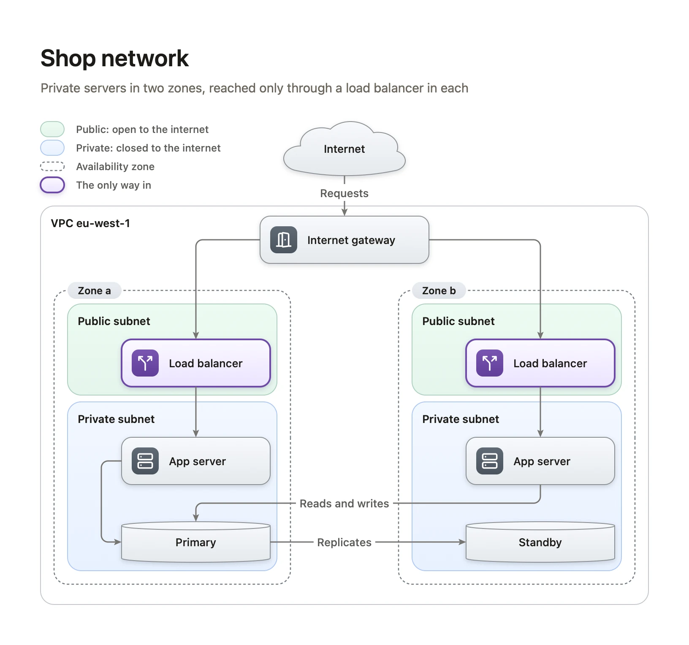
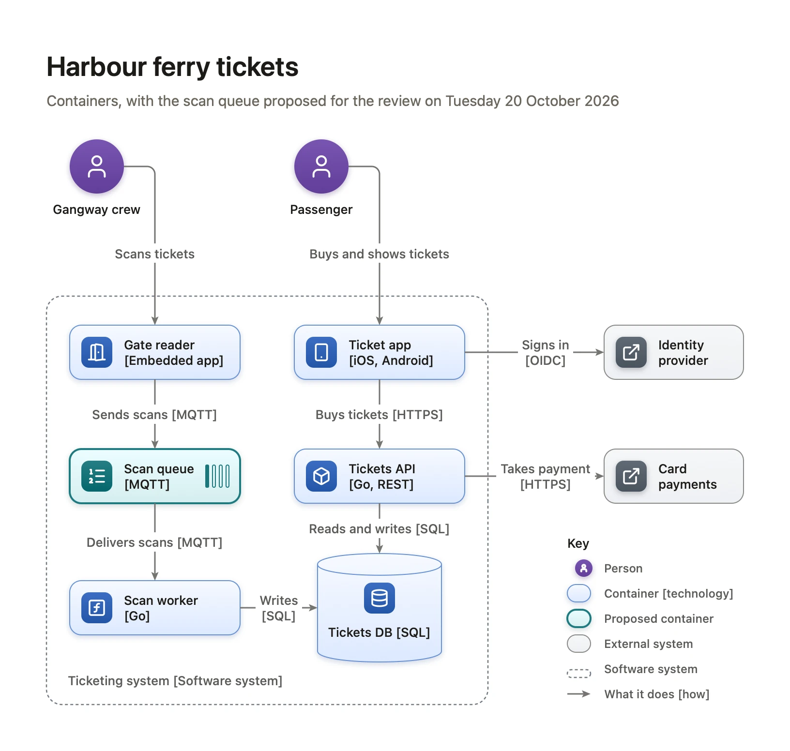
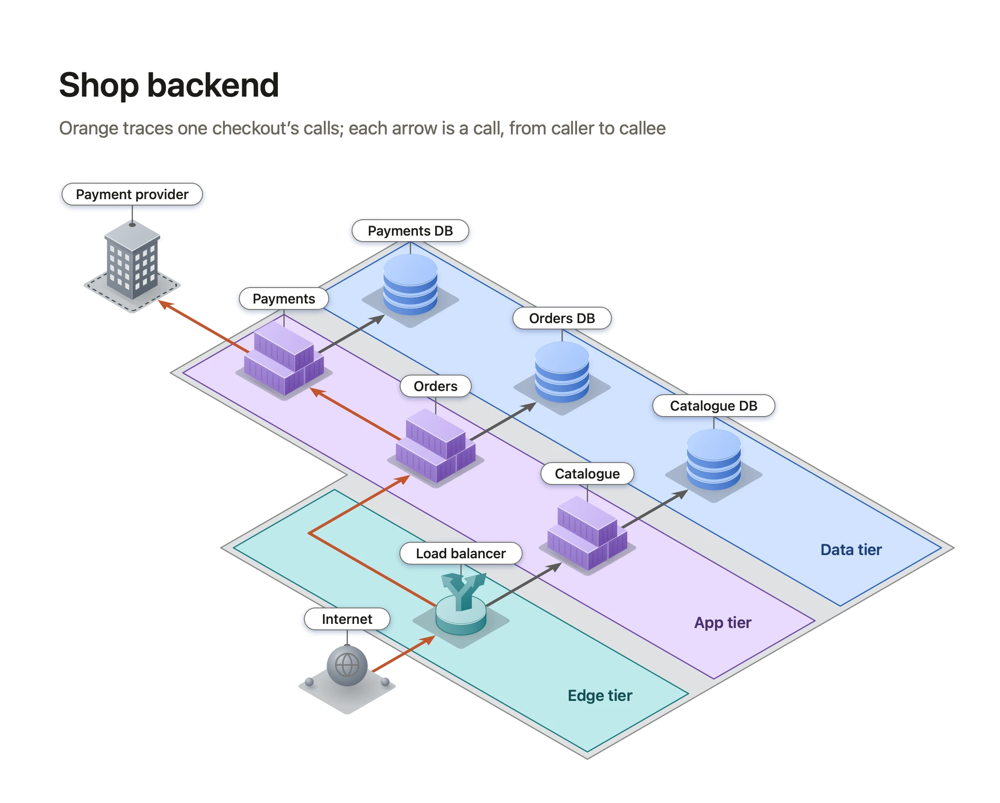

A system architecture diagram people can read
PUBLISHED 2026-11-06
Most architecture diagrams are drawn for the person who drew them. Boxes named after internal projects, arrows with no labels, three levels of detail on one page, and a cloud provider’s icon for everything. The author can read it. A new engineer, a security reviewer or the product manager can’t, and they are the people it was for.
This article is a way to draw an architecture diagram that explains a system to someone who doesn’t build it. It works whatever you draw with. The last part shows where Diagrove helps.
Decide who it’s for
Write down who will read the diagram and what they need from it. A new engineer needs to know where to look in the code. A security reviewer needs to know what talks to the internet and where the data lives. An operations team needs to know what fails over to what. A product manager needs to know which part to ask about.
One diagram can serve one of these readers well. Trying to serve all of them gives you a diagram that serves none, so draw two or three diagrams of the same system, each for its reader.
Pick one level of detail
The C4 model, by Simon Brown, is a simple way to keep levels apart. It describes a system at four zoom levels, and each diagram stays at one of them:
- Context: the system as one box, the people who use it and the other systems it talks to.
- Containers: inside the system, the applications and data stores that run separately, such as a web app, an API, a queue and a database, and how they talk.
- Components: inside one container, its main parts.
- Code: classes and functions, which are better left to the code itself.
Most teams need the first two and draw the third for a container that’s hard to understand. A diagram that shows a database table next to the whole payment provider is mixing levels, and the reader can’t tell how big anything is.
Name every box by what it does
A box needs a name a newcomer understands, what it does, and what it’s built with, in that order of size: “Tickets API” first, then “Sells tickets and shows them”, then “Go, REST” in smaller text. Internal code names are fine as the third line, never as the only one.
Draw people as people, the system’s own parts as one kind of box, and external systems, the ones you don’t run, as another. A reader should see at a glance what is yours to change.
Label every arrow
An unlabelled arrow says “these two are related”, which the reader already guessed. A label says what happens: “Takes payment [HTTPS]”, “Reads and writes [SQL]”, “Sends scans [MQTT]”. Say what flows and how.
Decide what an arrow’s direction means and keep to it. The most useful choice is usually the direction of the call, from the caller to the one it calls, even when data comes back. Write that choice in the key.
Draw the boundaries
The lines around things often matter more than the things. Draw the system’s own boundary, so the reader sees what’s inside and what isn’t. For infrastructure, draw the network boundaries that decide what can reach what: the VPC, public and private subnets, availability zones, the one way in from the internet.

Add a key, a title and a date
A key turns your conventions into facts: what each colour, shape and line means. A title says what the diagram shows and for whom (“Ferry tickets: containers, for the scan queue review”). A date and an owner tell the reader whether to trust it. A diagram without a date is assumed to be current, and usually isn’t.

Show one thing at a time
A diagram that shows everything highlights nothing. When you draw a diagram for a decision or a review, pick out the part it’s about: a proposed change in a different outline, or one request’s path traced in colour while everything else stays grey. Keep the rest of the system for context, quietly.
Keep it close to the system
A diagram is only useful while it’s true. Keep it where the people who change the system will see it: in the repository, beside the code, or linked from the service’s readme. Review it when the system changes, as part of the change, not once a year.
How Diagrove helps
Diagrove is a diagramming app for Mac and iPad. Three of its templates are architecture diagrams to start from, and its command-line tool lets a diagram live in a repository.
Start from a template at the right level. Cloud architecture is a C4 container diagram of a ferry ticketing system: people, containers with their technology, two external systems, a label on every arrow, a proposed change picked out and a key. Network is a VPC across two availability zones. System architecture is a shop’s backend in three tiers in isometric, with one checkout’s calls traced in orange. Choose File › New from template… (Shift-Command-N) on the Mac, or Choose a template on iPad.

Stencils for the parts. The Stencils tab has libraries for architecture and cloud parts, such as services, queues, functions, databases, load balancers and external systems, and an isometric set of servers, racks and cloud parts. One tint recolours a stencil whole, so colour can mean something in your key. See Stencils and tints.
Lines that stay attached. A line drawn between two shapes attaches to their magnets and follows when you move them, with its label. Rearranging a diagram to make room for a new service doesn’t break its arrows.
Keep it in the repository. The diagrove command-line tool for the Mac writes a document as Diagrove text, plain text that sits in a repository and shows a readable diff in a review, and builds it again. diagrove check lists what makes it hard to read, such as words that don’t fit their box or lines through shapes, and diagrove render draws a canvas as PNG, PDF or SVG, as the app exports it, for a readme or a wiki:
diagrove text Architecture.diagrove -o architecture.gtext
diagrove new --text architecture.gtext -o Architecture.diagrove
diagrove render Architecture.diagrove -o architecture.svgSee the command-line tool. Its MCP server offers the same commands to an AI assistant, which can then draw a first version from your notes, check it and look at the result.
Start with the next review
Draw the diagram your next design review needs: one reader, one level, every arrow labelled, the boundaries drawn, the change picked out. Put the date on it.
- See the Cloud architecture, Network and System architecture templates, and the other software templates: a sequence diagram, a database schema, a state machine and a release pipeline.
- Try the tutorial Diagrams with an AI assistant.